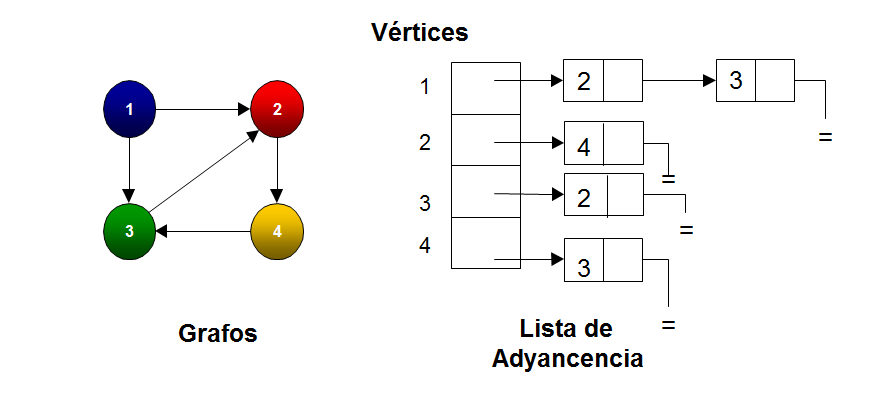
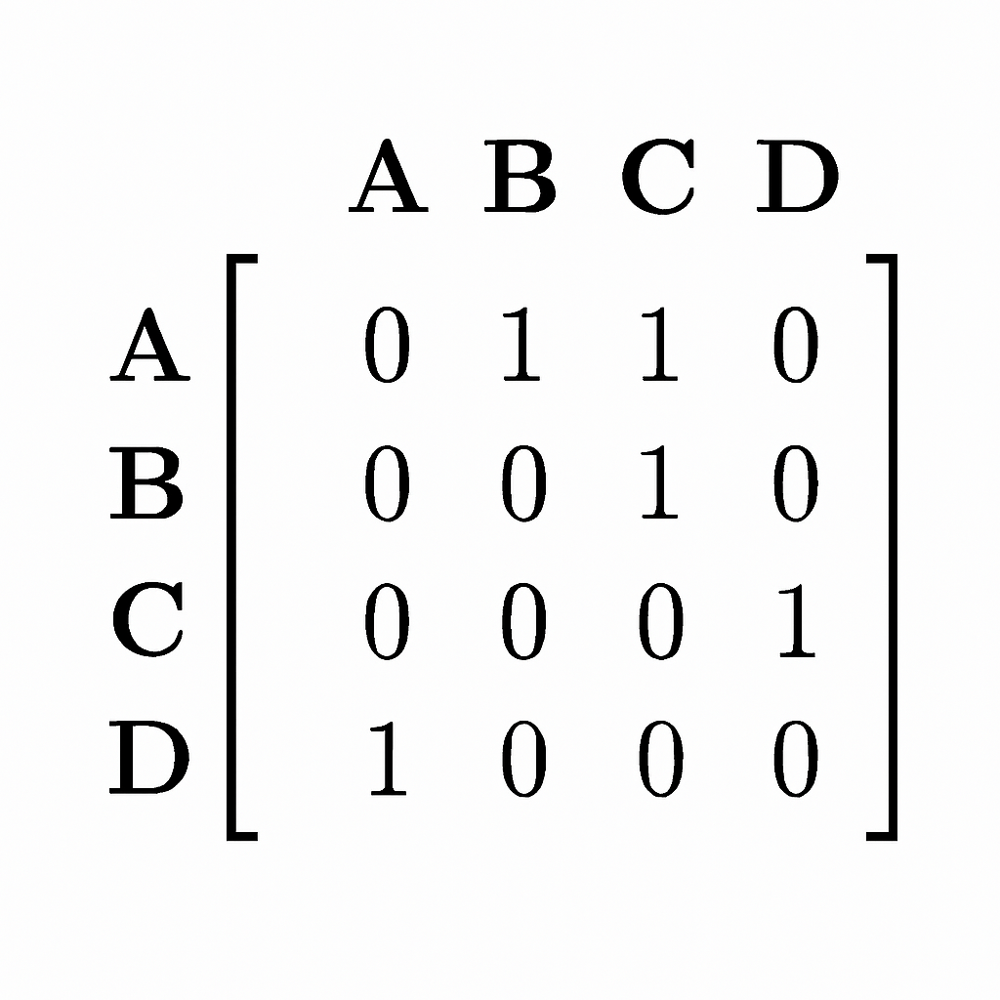

Los grafos se pueden representar en la memoria de una computadora principalmente de dos formas: Lista de Adyacencia y Matriz de Adyacencia. Estas representaciones permiten almacenar sus nodos y conexiones de forma organizada y eficiente.
La lista de adyacencia es una estructura donde cada vértice del grafo guarda una colección (lista) de sus vecinos directos. Es decir, por cada nodo se almacenan solo las aristas que realmente existen.Ideal para grafos dispersos (pocas conexiones). Consume poca memoria.
Una matriz de adyacencia es una forma de representar un grafo usando una tabla cuadrada donde cada fila y columna corresponde a un nodo. Cada celda indica si existe o no una conexión entre dos nodos. Ideal para consultar rápidamente si existe una arista entre un par de nodos.
 🔙 Volver